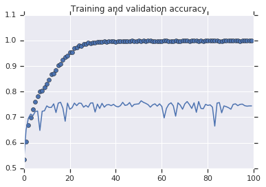
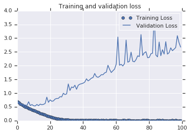
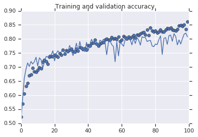
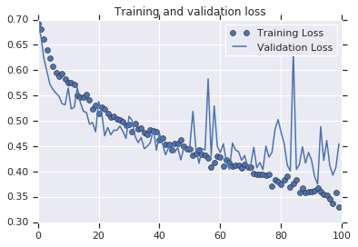
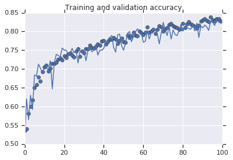
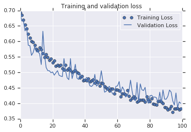

Let’s start with a model that’s very effective at learning Cats v Dogs.
It’s similar to the previous models that you have used, but I have updated the layers definition. Note that there are now 4 convolutional layers with 32, 64, 128 and 128 convolutions respectively.
Also, this will train for 100 epochs, because I want to plot the graph of loss and accuracy.
1 | !wget --no-check-certificate \ |
1 | import matplotlib.pyplot as plt |


The Training Accuracy is close to 100%, and the validation accuracy is in the 70%-80% range. This is a great example of overfitting — which in short means that it can do very well with images it has seen before, but not so well with images it hasn’t. Let’s see if we can do better to avoid overfitting — and one simple method is to augment the images a bit. If you think about it, most pictures of a cat are very similar — the ears are at the top, then the eyes, then the mouth etc. Things like the distance between the eyes and ears will always be quite similar too.
What if we tweak with the images to change this up a bit — rotate the image, squash it, etc. That’s what image augementation is all about. And there’s an API that makes it easy…
Now take a look at the ImageGenerator. There are properties on it that you can use to augment the image.
1 | # Updated to do image augmentation |
These are just a few of the options available (for more, see the Keras documentation. Let’s quickly go over what we just wrote:
- rotation_range is a value in degrees (0–180), a range within which to randomly rotate pictures.
- width_shift and height_shift are ranges (as a fraction of total width or height) within which to randomly translate pictures vertically or horizontally.
- shear_range is for randomly applying shearing transformations.
- zoom_range is for randomly zooming inside pictures.
- horizontal_flip is for randomly flipping half of the images horizontally. This is relevant when there are no assumptions of horizontal assymmetry (e.g. real-world pictures).
- fill_mode is the strategy used for filling in newly created pixels, which can appear after a rotation or a width/height shift.
Here’s some code where we’ve added Image Augmentation. Run it to see the impact.
1 | !wget --no-check-certificate \ |
1 | import matplotlib.pyplot as plt |


1 | !wget --no-check-certificate \ |
--2019-02-12 07:59:45-- https://storage.googleapis.com/mledu-datasets/cats_and_dogs_filtered.zip
Resolving storage.googleapis.com... 2607:f8b0:4001:c1c::80, 173.194.197.128
Connecting to storage.googleapis.com|2607:f8b0:4001:c1c::80|:443... connected.
WARNING: cannot verify storage.googleapis.com's certificate, issued by 'CN=Google Internet Authority G3,O=Google Trust Services,C=US':
Unable to locally verify the issuer's authority.
HTTP request sent, awaiting response... 200 OK
Length: 68606236 (65M) [application/zip]
Saving to: '/tmp/cats_and_dogs_filtered.zip'
/tmp/cats_and_dogs_ 100%[=====================>] 65.43M 243MB/s in 0.3s
2019-02-12 07:59:46 (243 MB/s) - '/tmp/cats_and_dogs_filtered.zip' saved [68606236/68606236]
Found 2000 images belonging to 2 classes.
Found 1000 images belonging to 2 classes.
Epoch 1/100
100/100 - 14s - loss: 0.6931 - acc: 0.5350 - val_loss: 0.6907 - val_acc: 0.5080
Epoch 2/100
100/100 - 14s - loss: 0.6855 - acc: 0.5400 - val_loss: 0.6660 - val_acc: 0.6200
Epoch 3/100
100/100 - 13s - loss: 0.6702 - acc: 0.5810 - val_loss: 0.6665 - val_acc: 0.5650
Epoch 4/100
100/100 - 13s - loss: 0.6541 - acc: 0.6000 - val_loss: 0.6342 - val_acc: 0.6300
Epoch 5/100
100/100 - 14s - loss: 0.6415 - acc: 0.6180 - val_loss: 0.6457 - val_acc: 0.5920
Epoch 6/100
100/100 - 13s - loss: 0.6248 - acc: 0.6495 - val_loss: 0.5875 - val_acc: 0.6840
Epoch 7/100
100/100 - 13s - loss: 0.6115 - acc: 0.6575 - val_loss: 0.5864 - val_acc: 0.6810
Epoch 8/100
100/100 - 13s - loss: 0.6010 - acc: 0.6780 - val_loss: 0.5550 - val_acc: 0.7130
Epoch 9/100
100/100 - 14s - loss: 0.5972 - acc: 0.6670 - val_loss: 0.5640 - val_acc: 0.7020
Epoch 10/100
100/100 - 14s - loss: 0.5877 - acc: 0.6920 - val_loss: 0.5830 - val_acc: 0.6900
Epoch 11/100
100/100 - 14s - loss: 0.5761 - acc: 0.7055 - val_loss: 0.5663 - val_acc: 0.7030
Epoch 12/100
100/100 - 14s - loss: 0.5708 - acc: 0.7100 - val_loss: 0.5662 - val_acc: 0.7030
Epoch 13/100
100/100 - 14s - loss: 0.5810 - acc: 0.6935 - val_loss: 0.5600 - val_acc: 0.6980
Epoch 14/100
100/100 - 14s - loss: 0.5734 - acc: 0.7025 - val_loss: 0.5253 - val_acc: 0.7220
Epoch 15/100
100/100 - 13s - loss: 0.5616 - acc: 0.7150 - val_loss: 0.6329 - val_acc: 0.6470
Epoch 16/100
100/100 - 14s - loss: 0.5487 - acc: 0.7150 - val_loss: 0.5577 - val_acc: 0.7160
Epoch 17/100
100/100 - 13s - loss: 0.5575 - acc: 0.7180 - val_loss: 0.5160 - val_acc: 0.7390
Epoch 18/100
100/100 - 13s - loss: 0.5481 - acc: 0.7250 - val_loss: 0.5057 - val_acc: 0.7360
Epoch 19/100
100/100 - 14s - loss: 0.5398 - acc: 0.7285 - val_loss: 0.5052 - val_acc: 0.7320
Epoch 20/100
100/100 - 13s - loss: 0.5448 - acc: 0.7240 - val_loss: 0.4988 - val_acc: 0.7560
Epoch 21/100
100/100 - 13s - loss: 0.5321 - acc: 0.7345 - val_loss: 0.5014 - val_acc: 0.7500
Epoch 22/100
100/100 - 13s - loss: 0.5379 - acc: 0.7295 - val_loss: 0.4910 - val_acc: 0.7500
Epoch 23/100
100/100 - 13s - loss: 0.5211 - acc: 0.7395 - val_loss: 0.4985 - val_acc: 0.7400
Epoch 24/100
100/100 - 14s - loss: 0.5236 - acc: 0.7420 - val_loss: 0.5055 - val_acc: 0.7410
Epoch 25/100
100/100 - 13s - loss: 0.5206 - acc: 0.7360 - val_loss: 0.4907 - val_acc: 0.7550
Epoch 26/100
100/100 - 14s - loss: 0.5234 - acc: 0.7310 - val_loss: 0.4880 - val_acc: 0.7430
Epoch 27/100
100/100 - 13s - loss: 0.5126 - acc: 0.7470 - val_loss: 0.4863 - val_acc: 0.7510
Epoch 28/100
100/100 - 13s - loss: 0.5086 - acc: 0.7545 - val_loss: 0.5446 - val_acc: 0.7160
Epoch 29/100
100/100 - 13s - loss: 0.5237 - acc: 0.7330 - val_loss: 0.5041 - val_acc: 0.7470
Epoch 30/100
100/100 - 13s - loss: 0.5077 - acc: 0.7475 - val_loss: 0.4819 - val_acc: 0.7510
Epoch 31/100
100/100 - 13s - loss: 0.5134 - acc: 0.7425 - val_loss: 0.4766 - val_acc: 0.7480
Epoch 32/100
100/100 - 13s - loss: 0.5066 - acc: 0.7535 - val_loss: 0.5445 - val_acc: 0.7220
Epoch 33/100
100/100 - 13s - loss: 0.5005 - acc: 0.7535 - val_loss: 0.4800 - val_acc: 0.7490
Epoch 34/100
100/100 - 13s - loss: 0.5027 - acc: 0.7625 - val_loss: 0.4992 - val_acc: 0.7570
Epoch 35/100
100/100 - 13s - loss: 0.5069 - acc: 0.7565 - val_loss: 0.5262 - val_acc: 0.7460
Epoch 36/100
100/100 - 13s - loss: 0.5000 - acc: 0.7560 - val_loss: 0.4814 - val_acc: 0.7500
Epoch 37/100
100/100 - 13s - loss: 0.4965 - acc: 0.7595 - val_loss: 0.4773 - val_acc: 0.7650
Epoch 38/100
100/100 - 13s - loss: 0.4830 - acc: 0.7665 - val_loss: 0.4946 - val_acc: 0.7370
Epoch 39/100
100/100 - 13s - loss: 0.4884 - acc: 0.7635 - val_loss: 0.4844 - val_acc: 0.7500
Epoch 40/100
100/100 - 13s - loss: 0.4742 - acc: 0.7745 - val_loss: 0.4790 - val_acc: 0.7500
Epoch 41/100
100/100 - 13s - loss: 0.4752 - acc: 0.7760 - val_loss: 0.4774 - val_acc: 0.7550
Epoch 42/100
100/100 - 13s - loss: 0.4743 - acc: 0.7655 - val_loss: 0.4838 - val_acc: 0.7700
Epoch 43/100
100/100 - 13s - loss: 0.4805 - acc: 0.7725 - val_loss: 0.4712 - val_acc: 0.7780
Epoch 44/100
100/100 - 13s - loss: 0.4706 - acc: 0.7790 - val_loss: 0.4564 - val_acc: 0.7840
Epoch 45/100
100/100 - 13s - loss: 0.4730 - acc: 0.7785 - val_loss: 0.4546 - val_acc: 0.7890
Epoch 46/100
100/100 - 13s - loss: 0.4762 - acc: 0.7835 - val_loss: 0.4599 - val_acc: 0.7570
Epoch 47/100
100/100 - 13s - loss: 0.4656 - acc: 0.7785 - val_loss: 0.4936 - val_acc: 0.7450
Epoch 48/100
100/100 - 13s - loss: 0.4719 - acc: 0.7685 - val_loss: 0.4557 - val_acc: 0.7910
Epoch 49/100
100/100 - 13s - loss: 0.4671 - acc: 0.7755 - val_loss: 0.4599 - val_acc: 0.7930
Epoch 50/100
100/100 - 13s - loss: 0.4559 - acc: 0.7815 - val_loss: 0.4702 - val_acc: 0.7620
Epoch 51/100
100/100 - 13s - loss: 0.4663 - acc: 0.7725 - val_loss: 0.5053 - val_acc: 0.7500
Epoch 52/100
100/100 - 13s - loss: 0.4641 - acc: 0.7715 - val_loss: 0.4698 - val_acc: 0.7700
Epoch 53/100
100/100 - 13s - loss: 0.4549 - acc: 0.7900 - val_loss: 0.4361 - val_acc: 0.7950
Epoch 54/100
100/100 - 13s - loss: 0.4506 - acc: 0.7835 - val_loss: 0.4389 - val_acc: 0.8000
Epoch 55/100
100/100 - 13s - loss: 0.4462 - acc: 0.7890 - val_loss: 0.4503 - val_acc: 0.7730
Epoch 56/100
100/100 - 13s - loss: 0.4399 - acc: 0.7975 - val_loss: 0.4550 - val_acc: 0.7860
Epoch 57/100
100/100 - 13s - loss: 0.4473 - acc: 0.7905 - val_loss: 0.4416 - val_acc: 0.7980
Epoch 58/100
100/100 - 13s - loss: 0.4471 - acc: 0.7880 - val_loss: 0.4301 - val_acc: 0.8070
Epoch 59/100
100/100 - 13s - loss: 0.4310 - acc: 0.8005 - val_loss: 0.4300 - val_acc: 0.7980
Epoch 60/100
100/100 - 13s - loss: 0.4435 - acc: 0.7960 - val_loss: 0.4549 - val_acc: 0.7950
Epoch 61/100
100/100 - 13s - loss: 0.4436 - acc: 0.7910 - val_loss: 0.4562 - val_acc: 0.7710
Epoch 62/100
100/100 - 13s - loss: 0.4402 - acc: 0.7975 - val_loss: 0.4704 - val_acc: 0.7740
Epoch 63/100
100/100 - 13s - loss: 0.4225 - acc: 0.8125 - val_loss: 0.4337 - val_acc: 0.8020
Epoch 64/100
100/100 - 13s - loss: 0.4312 - acc: 0.7975 - val_loss: 0.4532 - val_acc: 0.7800
Epoch 65/100
100/100 - 13s - loss: 0.4314 - acc: 0.8000 - val_loss: 0.4433 - val_acc: 0.7990
Epoch 66/100
100/100 - 12s - loss: 0.4273 - acc: 0.8055 - val_loss: 0.4204 - val_acc: 0.8030
Epoch 67/100
100/100 - 12s - loss: 0.4427 - acc: 0.7950 - val_loss: 0.4254 - val_acc: 0.8040
Epoch 68/100
100/100 - 12s - loss: 0.4229 - acc: 0.8055 - val_loss: 0.4383 - val_acc: 0.7950
Epoch 69/100
100/100 - 12s - loss: 0.4116 - acc: 0.8150 - val_loss: 0.4749 - val_acc: 0.7670
Epoch 70/100
100/100 - 13s - loss: 0.4167 - acc: 0.8125 - val_loss: 0.4388 - val_acc: 0.7950
Epoch 71/100
100/100 - 13s - loss: 0.4216 - acc: 0.8015 - val_loss: 0.4123 - val_acc: 0.8240
Epoch 72/100
100/100 - 13s - loss: 0.4165 - acc: 0.8075 - val_loss: 0.4087 - val_acc: 0.8060
Epoch 73/100
100/100 - 13s - loss: 0.4048 - acc: 0.8105 - val_loss: 0.4676 - val_acc: 0.7890
Epoch 74/100
100/100 - 13s - loss: 0.4071 - acc: 0.8185 - val_loss: 0.4029 - val_acc: 0.8140
Epoch 75/100
100/100 - 13s - loss: 0.4111 - acc: 0.8205 - val_loss: 0.4629 - val_acc: 0.7800
Epoch 76/100
100/100 - 13s - loss: 0.4103 - acc: 0.8145 - val_loss: 0.4440 - val_acc: 0.8040
Epoch 77/100
100/100 - 13s - loss: 0.4101 - acc: 0.8110 - val_loss: 0.4412 - val_acc: 0.7920
Epoch 78/100
100/100 - 13s - loss: 0.4050 - acc: 0.8095 - val_loss: 0.4516 - val_acc: 0.7890
Epoch 79/100
100/100 - 13s - loss: 0.4211 - acc: 0.8060 - val_loss: 0.4109 - val_acc: 0.8020
Epoch 80/100
100/100 - 13s - loss: 0.4120 - acc: 0.8070 - val_loss: 0.3999 - val_acc: 0.8190
Epoch 81/100
100/100 - 13s - loss: 0.4064 - acc: 0.8215 - val_loss: 0.4246 - val_acc: 0.8010
Epoch 82/100
100/100 - 13s - loss: 0.4150 - acc: 0.8100 - val_loss: 0.4260 - val_acc: 0.8120
Epoch 83/100
100/100 - 13s - loss: 0.3988 - acc: 0.8195 - val_loss: 0.4198 - val_acc: 0.8090
Epoch 84/100
100/100 - 13s - loss: 0.3964 - acc: 0.8265 - val_loss: 0.4204 - val_acc: 0.8080
Epoch 85/100
100/100 - 13s - loss: 0.3946 - acc: 0.8200 - val_loss: 0.4179 - val_acc: 0.8060
Epoch 86/100
100/100 - 13s - loss: 0.4067 - acc: 0.8170 - val_loss: 0.4001 - val_acc: 0.8210
Epoch 87/100
100/100 - 13s - loss: 0.4072 - acc: 0.8135 - val_loss: 0.4360 - val_acc: 0.8010
Epoch 88/100
100/100 - 13s - loss: 0.4049 - acc: 0.8090 - val_loss: 0.4009 - val_acc: 0.8220
Epoch 89/100
100/100 - 13s - loss: 0.3992 - acc: 0.8170 - val_loss: 0.4432 - val_acc: 0.7840
Epoch 90/100
100/100 - 13s - loss: 0.3868 - acc: 0.8280 - val_loss: 0.4135 - val_acc: 0.8140
Epoch 91/100
100/100 - 13s - loss: 0.3855 - acc: 0.8310 - val_loss: 0.4134 - val_acc: 0.8100
Epoch 92/100
100/100 - 13s - loss: 0.3789 - acc: 0.8340 - val_loss: 0.4227 - val_acc: 0.8170
Epoch 93/100
100/100 - 13s - loss: 0.3828 - acc: 0.8295 - val_loss: 0.4429 - val_acc: 0.8120
Epoch 94/100
100/100 - 13s - loss: 0.3903 - acc: 0.8260 - val_loss: 0.4364 - val_acc: 0.8030
Epoch 95/100
100/100 - 13s - loss: 0.3718 - acc: 0.8385 - val_loss: 0.4082 - val_acc: 0.8280
Epoch 96/100
100/100 - 13s - loss: 0.3831 - acc: 0.8305 - val_loss: 0.3946 - val_acc: 0.8240
Epoch 97/100
100/100 - 13s - loss: 0.3824 - acc: 0.8270 - val_loss: 0.4335 - val_acc: 0.8160
Epoch 98/100
100/100 - 13s - loss: 0.3835 - acc: 0.8330 - val_loss: 0.3861 - val_acc: 0.8320
Epoch 99/100
100/100 - 13s - loss: 0.3789 - acc: 0.8330 - val_loss: 0.4047 - val_acc: 0.8250
Epoch 100/100
100/100 - 13s - loss: 0.3822 - acc: 0.8275 - val_loss: 0.3997 - val_acc: 0.8260
1 | import matplotlib.pyplot as plt |

